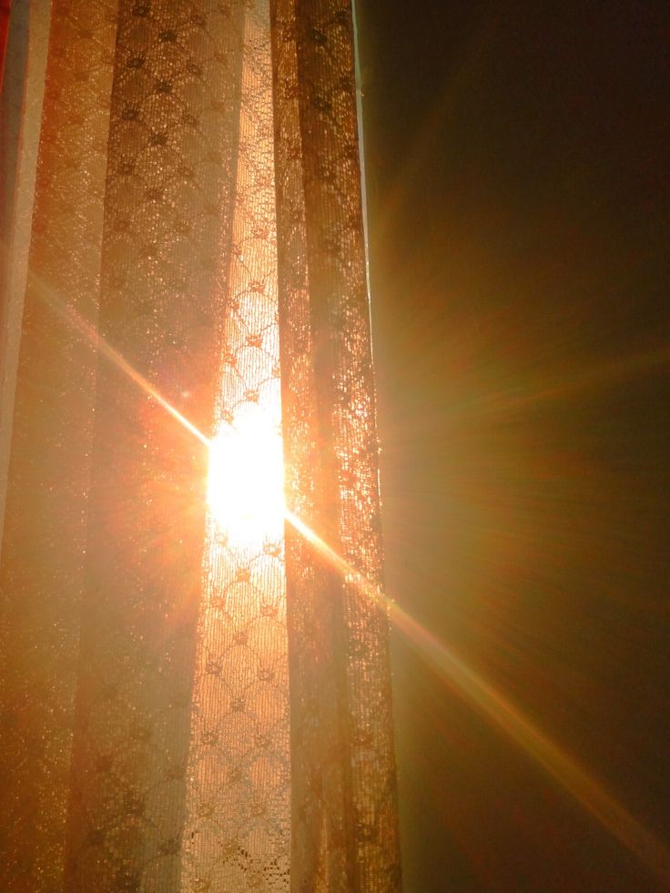
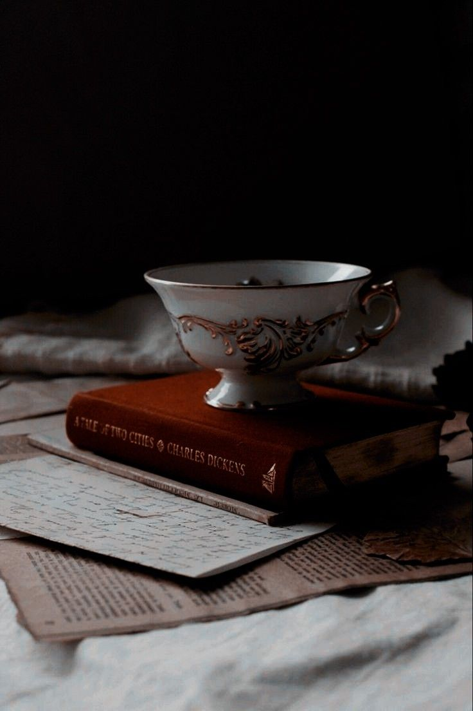
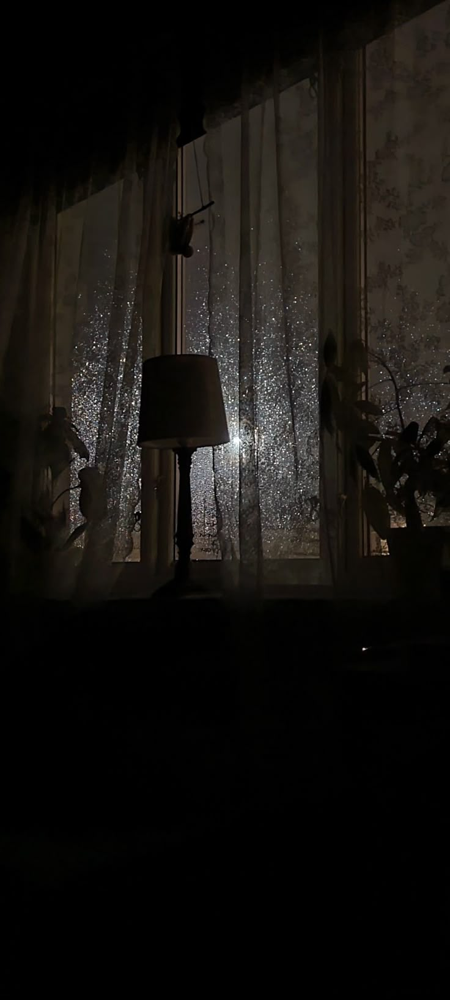
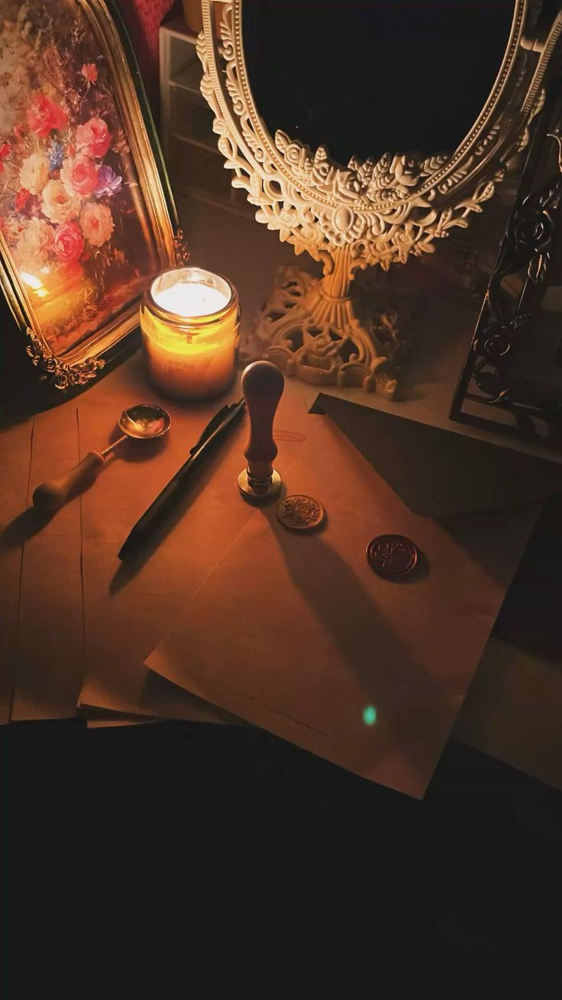
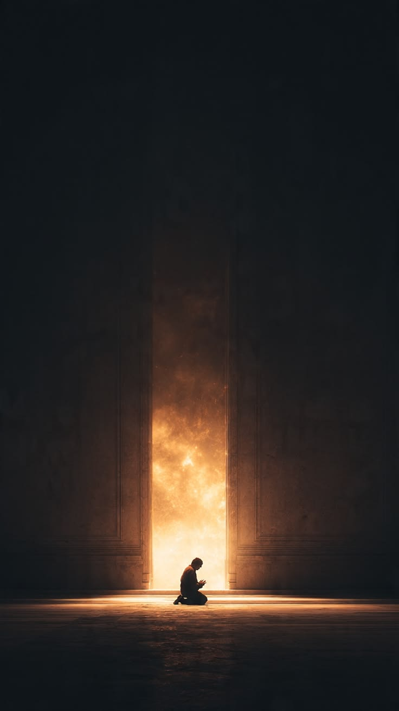

"Kabhi kabhi poora din bilkul aam guzarta hai... aur wahi din ki raat insaan ki poori zindagi badal deti hai."

✦ Qareeb Aur Door ✦
Itwaar tha.
Isliye aaj Fahad ne alarm hi nahi lagaya tha.
Pichhli raat der tak Qasim ke saath ghoomte hue waqt ka pata hi nahi chala tha.
Jab uski aankh khuli...
Ghadi kareeb baarah baja rahi thi.
Usne aadhi neend mein mobile uthaya.
Screen ki roshni aankhon mein chubhi.
Do teen notifications padi thi.
Ek Qasim ka meme...
Do office group ke messages...
Aur kuch Instagram notifications.
Usne phone side mein rakha.
Ek gehri angdaai li...
Aur kuch lamhe yunhi bistar par baitha raha.
Aaj kahin pahunchne ki koi jaldi nahi thi.
Itwaar ki subah aksar aisi hi guzarti thi.
Woh dheere se uth kar bathroom chala gaya.
Muh dhoya...
Daant saaf kiye...
Aur fresh hokar bahar nikla.
Tab tak ghar apni roz ki raftaar pakad chuka tha.
Kitchen se tadke ki khushboo aa rahi thi.
Ammi dopahar ke khane ki taiyari ke saath saath nashta bhi garam kar rahi thi.
Drawing room mein TV par news chal rahi thi.
Abbu aadhi nazar TV par aur aadhi mobile par rakhe baithe the.
Fahad ne aate hi salaam kiya.
Sab ne hamesha ki tarah jawab diya.
Phir woh chup-chaap nashta karne baith gaya.
Nashta karte hue kabhi Ammi kisi ghar ke kaam ka zikr kar detin...
Kabhi Abbu kisi khabar par apni rai de dete...
Aur Fahad beech beech mein do chaar baatein karta rehta.
Har Itwaar ki tarah...
Aaj bhi ghar ka mahaul bilkul aam tha.
Nashta khatam hua to woh drawing room ke sofa par ja baitha.
Mobile haath mein liya...
Aur aadat ke mutabiq reels dekhne laga.
Kabhi koi funny video...
Kabhi kisi Islamic page ki clip...
Kabhi kisi food vlogger ki reel.
Waqt ka pata hi nahi chala.
Achanak uski nazar mobile ke upar waqt par padi.
12:54
"Abe..."
"Ek bajne wale hain."
Woh foran uth khada hua.
"Masjid bhi jaana hai."
Jaldi se shower liya.
Safed kurta pehna.
Itr lagaya.
Topi uthai.
Aur ghar se nikal gaya.
Masjid zyada door nahi thi.
Jab woh wahan pahuncha...
Zohr ki jamaat shuru hone mein abhi paanch minute baaki the.
Log dheere dheere safon mein baith rahe the.
Koi Qur'an ki tilawat kar raha tha...
Koi tasbeeh padh raha tha...
Aur koi aankhen band kiye khamoshi se Allah ka zikr kar raha tha.
Fahad ne wuzu taaza kiya...
Pehli saf ke ek kone mein jaakar baith gaya...
Aur iqamat ka intezar karne laga.
Kuch hi der baad iqamat hui.
Sab log safon mein seedhe khade ho gaye.
Imam sahab ne takbeer kahi...
Aur chand hi lamhon mein Zohr ki namaz ada kar li gayi.
Salaam phirte hi kuch log foran uth kar masjid se bahar nikal gaye.
Lekin zyadatar log apni jagah baithe rahe.
Aakhir har Itwaar Zohr ke baad Dawat-e-Islami ka bayan hota tha.
Fahad bhi tasbeeh padhte hue wahi baitha raha.
Masjid mein dheere dheere ek alag hi sukoon utarne laga.
Kisi ne Qur'an Shareef khol liya...
Koi deewar se tek laga kar zikr mein mashghool ho gaya...
Aur kuch log khamoshi se mimbar ki taraf dekhne lage.
Thodi der baad muballigh sahab mimbar ke qareeb tashreef laaye.
Unhone sabse pehle Durood-e-Pak padhwaya.
Masjid mein ek saath durood ki awaaz goonj uthi.
Uske baad unhone salam kiya...
Hamd-o-Sana pesh ki...
Aur narm lehje mein kehne lage,
"Alhamdulillahi Rabbil Aalameen... Allah Ta'ala ka lakh lakh shukr hai jisne hume ek aur din apni ibadat ke liye zinda rakha."
"Pyare Islami bhaiyo..."
"Aaj hum ek aise mauzu par baat karenge..."
"Jiski kami ki wajah se aaj na jaane kitne ghar barbaad ho rahe hain..."
"Kitni zindagiyan gunahon mein doob rahi hain..."
"Kitne jawaan bechain hain..."
Thoda sa waqfa lekar unhone kaha,
"Aur woh cheez hai... Haya."
Masjid mein gehri khamoshi chha gayi.
Har shakhs tawajjoh se sun raha tha.
Muballigh sahab ne aage farmaya,
"Haya sirf ek aadat nahi..."
"Haya Allah Ta'ala ki bahut badi ne'mat hai."
"Jis insaan ke dil mein haya zinda hoti hai..."
"Uska imaan bhi zinda rehta hai."
Phir unhone Hadees ka mafhoom bayan kiya,
"Har deen ki ek pehchaan hoti hai... aur Islam ki pehchaan Haya hai."
Unhone mimbar par rakhe Qur'an ki taraf ishara karte hue kaha,
"Aaj afsos ke saath kehna padta hai..."
"Humne haya ko sirf aurat ke burkhe tak mehdood kar diya."
"Jabke Allah Ta'ala ne sabse pehle mardon ko hukm diya..."
'Apni nazrein neeche rakho.'
"Parda sirf kapdon ka nahi hota..."
"Parda nazron ka bhi hota hai."
"Parda niyyat ka bhi hota hai."
"Parda dil ka bhi hota hai."
Ye alfaaz sunkar masjid mein baithe kai jawaan khamoshi se sar jhukaye baithe the.
Fahad bhi unhi mein se ek tha.
Muballigh ne baat ko aage badhaya.
"Aaj ka jawaan kehta hai..."
'Mujhe mohabbat ho gayi.'
"Main poochta hoon..."
"Kis se?"
"Uske akhlaaq se...?"
"Uske deen se...?"
"Uske haya se...?"
"Ya sirf uski tasveer dekh kar?"
Masjid mein halka sa sannata tha.
Kisi ne koi awaaz nahi nikali.
Muballigh ne narmi se kaha,
"Yaad rakhiye..."
"Chehra kabhi bhi insaan ko dhoka de sakta hai."
"Lekin haya..."
"Haya kabhi dhoka nahi deti."
"Agar Allah kisi bande ya bandi ko haya ata kar de..."
"To samajh lijiye Allah ne us par apni khaas rehmat farmayi hai."
Unhone apni awaaz aur dheemi kar li.
"Khoobsurati do tarah ki hoti hai..."
"Ek woh jo aankhon ko achhi lagti hai..."
"Aur ek woh jo Allah ko achhi lagti hai."
"Aankhon wali khoobsurati waqt ke saath dhal jaati hai..."
"Lekin Allah ko pasand aane wali khoobsurati..."
"Woh insaan ke aamaal mein rehti hai."
Muballigh Sahab kuch lamhe ke liye khamosh hue.
Phir muskurakar kehne lage,
"Main aap logon ko ek waqia sunata hoon."
"Ek martaba Rasoolullah ﷺ ke paas ek naujawan aaya."
"Usne arz kiya,
'Ya Rasoolallah ﷺ... mujhe zina ki ijazat de dijiye.'"
Masjid mein baithe Sahaba-e-Kiram ko uski baat bahut buri lagi.
Kuch Sahaba foran uski taraf badhe.
Lekin Rasoolullah ﷺ ne unhe roka.
Aur us naujawan ko apne qareeb bula liya.
Phir aap ﷺ ne usse pyar se poocha,
"Kya tum ye pasand karoge ke koi tumhari maa ke saath aisa kare?"
Usne foran kaha,
"Nahi, Ya Rasoolallah ﷺ."
Aap ﷺ ne farmaya,
"Log bhi apni maaon ke liye ye pasand nahi karte."
Phir aap ﷺ ne poocha,
"Kya tum apni behen ke liye ye pasand karoge?"
Usne kaha,
"Hargiz nahi."
Isi tarah Rasoolullah ﷺ ne usse uski beti, phuphi aur khala ke baare mein poocha.
Har baar uska jawab ek hi tha.
"Nahi."
Tab Rasoolullah ﷺ ne apna mubarak haath uske seene par rakha.
Aur dua ki,
"Ya Allah... iske gunah maaf farma, iske dil ko paak kar de aur iski hifazat farma."
Muballigh Sahab ne dheemi awaaz mein kaha,
"Riwayat mein aata hai ke us dua ke baad us naujawan ke dil se woh gunah ki khwahish hi nikal gayi."
Masjid mein gehri khamoshi chha gayi.
Har shakhs sar jhukaye baitha tha.
Muballigh Sahab ne phir kaha,
"Dekhiye..."
"Islam sirf 'ye mat karo' nahi kehta."
"Islam dil ki islaah karta hai."
"Jab dil paak ho jaata hai..."
"To nazrein khud-ba-khud paak ho jaati hain."
"Jab nazrein paak ho jaati hain..."
"To mohabbat bhi paak ho jaati hai."
"Yaad rakhiye..."
"Jis mohabbat ki bunyaad haya par ho..."
"Allah usme barkat ata farma deta hai."
Muballigh Sahab ne paani ka ek ghunt piya.
Phir kehne lage,
"Ek aur baat yaad rakhiye..."
"Haya sirf aurat ke liye nahi hoti..."
"Mard ke liye bhi utni hi zaroori hai."
Phir unhone ek hadees sunayi.
"Rasoolullah ﷺ ne Hazrat Ali رضي الله عنه se farmaya,

✦ Dil Ki Bechaini ✦
'Ali...
Pehli nazar agar achanak pad jaaye to maaf hai...
Lekin doosri nazar mat daalna.
Kyunki pehli tumhare liye hai...
Aur doosri tumhare khilaaf hai.'"
Muballigh Sahab ne masjid mein baithe logon ki taraf dekha.
"Is hadees mein kitni badi hikmat chhupi hui hai."
"Insaan ka ikhtiyaar pehli nazar par nahi hota."
"Lekin doosri nazar uske apne ikhtiyaar mein hoti hai."
"Aur wahi doosri nazar...
Aksar dil mein fitne ka pehla darwaza khol deti hai."
Masjid mein gehri khamoshi thi.
Har shakhs tawajjoh se sun raha tha.
Muballigh Sahab ne apni awaaz aur narm kar li.
"Yaqeen maaniye..."
"Jo mard Allah ke liye apni nazar jhuka leta hai..."
"Allah uske dil mein aisi roshni paida kar deta hai..."
"Jo duniya ki kisi cheez se nahi mil sakti."
"Isliye agar kabhi kisi ki haya...
Kisi ka parda...
Ya kisi ki sharafat dekh kar dil mutaasir ho..."
"To us ehsaas ko gunah ki taraf mat le jaiye."
"Uske liye Allah se halal raasta maangiye."
"Kyunki paak dilon ko...
Paak tareeqe hi zeba dete hain."
Phir unhone Qur'an ki taraf ishara karte hue kaha,
"Allah Ta'ala ne sabse pehle mardon ko hukm diya:
'Momin mardon se keh dijiye ke woh apni nazrein neechi rakhein aur apni paakdamni ki hifazat karein.'
Uske baad hi aurton ke liye hukm nazil hua."
"Yaani islaah ki shuruaat mard se hoti hai."
"Jab mard apni nazar ki hifazat karega..."
"Tabhi muashra paak banega."
Masjid mein phir ek gehri khamoshi chha gayi.
Fahad ne beikhtiyaar apni nazrein aur jhuka li.
Us waqt usne shayad is baat par zyada ghour nahi kiya...
Lekin ye alfaaz...
Aaj raat uske dil mein dobara goonjne wale the.
Masjid mein kuch lamhon ke liye gehri khamoshi chha gayi.
Muballigh sahab ne paani ka ek ghunt piya.
Phir narm lehje mein kehne lage,
"Ek aur hadees ka mafhoom suniye..."
"Rasoolullah ﷺ ne irshad farmaya ke saat qism ke logon ko Qayamat ke din Allah Ta'ala apne Arsh ke saaye mein jagah ata farmayenge..."
"Unhi mein ek woh jawan bhi hai..."
"...jisne apni jawani Allah ki ibadat mein guzari."
Ye alfaaz sunte hi masjid ka mahaul aur pur-sukoon ho gaya.
Muballigh ne aage kaha,
"Sochiye..."
"Jawani woh umar hoti hai jahan insaan ke paas taqat bhi hoti hai..."
"Khwahishaat bhi hoti hain..."
"Duniya ke hazaar raste uske saamne khule hote hain."
"Lekin jo jawan in sab ke bawajood Allah ko chun leta hai..."
"Apni nazron ki hifazat karta hai..."
"Apne dil ki hifazat karta hai..."
"Apni zubaan ki hifazat karta hai..."
"Allah usse kabhi zaya nahi karta."
Unhone ek nazar poori masjid par daali.
"Kabhi ye mat sochna..."
"Ke gunah se bachne ka koi ajr nahi."
"Jis haram ko tum sirf Allah ke liye chhod dete ho..."
"Allah usse behtar cheez tumhare naseeb mein likh deta hai."
"Kab..."
"Kaise..."
"Kis surat mein..."
Ye sirf Allah jaanta hai.
Masjid mein baithe kai naujawan sar jhukaye baithe the.
Fahad bhi unhi mein se ek tha.
Har jumla woh tawajjoh se sun raha tha.
Muballigh ne aakhir mein kaha,
"Apni jawani ko aazmaish mat samjho..."
"Ise Allah ki amanat samjho."
"Ye chand saal agar Allah ki raza mein guzar gaye..."
"To baaqi zindagi bhi aasaan ho jayegi."
Unhone mic se thoda peeche hote hue kaha,
"Bas itni hi guzarish hai..."
"Apni namazon ki hifazat kijiye."
"Apni nazron ki hifazat kijiye."
"Aur apne dil ko har us cheez se bachaiye..."
"...jo Allah ko pasand nahi."
"Allah Ta'ala hum sab ko amal ki taufeeq ata farmaye."
"Aameen."
Poore masjid se ek saath awaaz uthi,
"Aameen."
Iske baad dua hui.
Har taraf uthe hue haath the.
Koi apni aulaad ke liye dua maang raha tha...
Koi rizq ke liye...
Koi sehat ke liye...
Aur koi sirf Allah ki maghfirat ke liye.
Fahad ne bhi dono haath uthaye.
Usne koi lambi dua nahi maangi.
Bas itna kaha,
"Ya Allah..."
"Mujhe hamesha seedhe raste par qayam rakh."
Dua ke baad log dheere dheere masjid se bahar nikalne lage.
Fahad bhi apni chappal pehen kar ghar ki taraf chal diya.
Uske zehan mein bayaan ke alfaaz abhi tak goonj rahe the...
Lekin use bilkul andaaza nahi tha...
Ke aaj ki raat...
Yehi alfaaz uske dil mein ek naya ehsaas paida karne wale the.
Masjid se bahar nikalte hi dhoop pehle se tez ho chuki thi.
Log apni apni raah pakad kar gharon ki taraf laut rahe the.
Kisi ko jaldi thi...
Koi raste mein hi kisi jaan-pehchaan wale se mil kar khada ho gaya.
Fahad ne bhi do teen buzurgon ko salaam kiya...
Aur aahista aahista ghar ki taraf chal diya.
Ghar pahunchte hi Ammi ne awaaz di,
"Haath muh dho lo..."
"Khana laga deti hoon."
Fahad ne kurta badla...
Haath muh dhoya...
Aur dastarkhwan par baith gaya.
Aaj khane mein daal, aloo gosht aur garam garam rotiyan thi.
Ghar ka khana...
Din bhar ki masroofiyat ke baad...
Hamesha alag hi sukoon deta tha.
Khana khate waqt Abbu ne bazaar ka zikr chhed diya.
"Shaam ko nikalna."
"Kitchen ka samaan bhi lana hai."
Ammi ne foran baat pakad li.
"Chai patti bhi khatam ho gayi hai."
"Aur cheeni bhi le aana."
"Theek hai."
Fahad ne sir hila diya.
Khana khatam karne ke baad usne paani piya...
Mobile uthaya...
Aur apne kamre mein chala gaya.
Socha tha thodi der phone chalaunga...
Phir uth jaunga.
Lekin jaise hi bistar par letkar mobile haath mein liya...
Pata hi nahi chala kab aankh lag gayi.
Jab uski aankh khuli...
Shaam dhalne lagi thi.
Khidki se naram dhoop kamre mein aa rahi thi.
Mobile uthaya.
5:10 PM
"Arre..."
Woh foran uth kar baith gaya.
Usne muh par paani mara hi tha...
Ke bahar se Qasim ki awaaz aayi,
"Oye Fahaaad...!"
"Nikal..."
Fahad bahar aaya to dekha...
Qasim apne Abbu ki nayi bike par baitha hua tha.
Usne bike ko dekhte hi poocha,
"Aaj bike?"
Qasim muskuraya.
"Abbu ki hai."
"Aaj le aaya."
Fahad ne hans kar kaha,
"Achha hua..."
"Meri wali ka petrol pipe phat gaya hai."
"Kal mechanic ke paas le jaunga."
Qasim ne jeb se chaabi nikali...
Aur uski taraf uchhal di.
"Tu hi chala."
Fahad ne bina kuch kahe chaabi pakad li.
Ye un dono ke beech ek purana rule tha.
Bike chahe kisi ki bhi ho...
Handle hamesha Fahad hi pakadta tha.
Qasim ko bike chalana seekhe abhi kuch hi mahine hue the.
Aur Fahad...
Lagbhag aath saal se bike chala raha tha.
Qasim khud bhi jaanta tha...
Ke is maamle mein uspar bharosa karna abhi thoda jaldi hoga.
Woh peeche baith gaya.
"Chal driver..."
Fahad hans diya.
"Zyada bol mat..."
"Gir gaya na to ghar tak paidal jayega."
Qasim zor se hans pada.
Aur bike dheere dheere D-Mart ki taraf badh gayi.
"Seedha D-Mart?"
Fahad ne bike start karte hue jawab diya,
"Haan... pehle rashan nipta lete hain. Maghrib se pehle wapas aa gaye to theek rahega."
Engine ki awaaz ke saath bike gali se nikal kar main road par aa gayi.
Itwaar ki shaam hone ki wajah se sadkon par aam dinon se zyada bheed thi.
Kahin families shopping ke liye nikli hui thi...
Kahin bachche cycle chala rahe the...
Aur har doosre signal par gaadiyon ki lambi line lagi hui thi.
Qasim peeche baitha idhar udhar dekh raha tha.

✦ Rainy Night Lamp ✦
Kabhi kisi gaadi wale par comment karta...
Kabhi kisi ajeeb number plate ko padh kar hans padta.
Fahad hamesha ki tarah aaraam se bike chala raha tha.
Uske liye bike chalana sirf safar nahi...
Ek aadat thi.
Lagbhag aadhe ghante baad dono D-Mart ke parking mein pahunch gaye.
Bike park karke Fahad ne trolley uthayi.
Qasim ne aas paas nazar daalte hue kaha,
"Aaj to poora Mumbai yahin aa gaya lagta hai."
Fahad muskuraya.
"Itwaar hai...
Sabko aaj hi rashan yaad aata hai."
Dono andar dakhil ho gaye.
Thandi hawa ka jhonka lagte hi bahar ki garmi ka ehsaas khatam ho gaya.
Har taraf log hi log the.
Kisi ki trolley poori bhari hui thi...
Koi offers dekh raha tha...
Koi bachchon ko sambhal raha tha...
Aur koi sirf ghoom raha tha.
Fahad ne mobile nikala.
Ammi ki bheji hui list kholi.
"Chal..."
"Jo list mein hai woh pehle lete hain."
"Baad mein tera tourism karenge."
Qasim hans pada.
"Main to bas environment enjoy kar raha hoon."
Dono trolley lekar pehle grocery section ki taraf badh gaye.
Chawal...
Aata...
Daal...
Tel...
Masale...
Ek ek karke trolley bharne lagi.
Fahad list dekhta...
Samaan uthata...
Aur trolley mein rakhta jaata.
Qasim ka kaam bas trolley dhakelna tha.
Lekin usme bhi woh kabhi chips utha leta...
Kabhi chocolate...
Kabhi bina wajah koi naya product dekhne lagta.
Fahad har do minute baad usse tok deta.
"Abe..."
"List mein hai kya?"
Qasim packet wapas rakhte hue kehta,
"Nahi."
"Bas dekh raha tha."
Fahad sirf sar hila kar reh jaata.
Lagbhag ek ghante mein zaroorat ka aadha samaan trolley mein aa chuka tha.
Phir dono cleaning section...
Kitchen section...
Aur household items ki taraf badh gaye.
Beech beech mein Qasim apne ghar ke liye bhi samaan uthata ja raha tha.
Kabhi apni Ammi ko phone karke pooch leta,
"Ammi aur kuch chahiye?"
Udhar se jawab aata,
"Nahi... bas cheeni le aana."
Aur woh phir trolley mein cheeni ka packet rakh deta.
Shopping karte karte dono pehle floor par pahunch gaye.
Yahin bachchon ka section tha.
Har taraf rang birange toys sajae hue the.
Remote wali gaadiyan...
Soft toys...
Plastic ki guns...
Football...
Cricket bats...
Aur na jaane kya kya.
Qasim ne ek football uthai aur seedha Fahad ki taraf uchhal di.
Fahad ne bhi bina soche use catch kar liya.
"Abe D-Mart mein match khelega kya?"
Qasim hans pada.
"Bas dekh raha tha grip kaisi hai."
Do second baad dono waqai bachchon ki tarah ball ek doosre ki taraf uchhalne lage.
Kabhi chest pass...
Kabhi bounce pass...
Kabhi Qasim jaan bujhkar tez phek deta.
"Abe dheere..."
"Kisi ko lag gayi to security bahar nikal degi."
Qasim hans kar bola,
"Match jeetne ke liye risk lena padta hai."
Dono ki hansi sun kar paas se guzarta ek chhota bachcha bhi muskura diya.
Uski Ammi ne use haath pakad kar aage le gayi.
Fahad ne ball wapas uski jagah rakhi.
"Chal..."
"Kaafi bachpana ho gaya."
Qasim ne afsos se kaha,
"Yaar..."
"Bada hona bhi kitni bekaar cheez hai."
Dono hans diye.
Phir trolley uthai...
Aur dobara grocery section ki taraf badh gaye.
Abhi bhi list ka kaafi samaan baaki tha.
Ek shelf se doosri shelf tak ghoomte ghoomte waqt nikalta ja raha tha.
Itwaar hone ki wajah se D-Mart mein kaafi bheed thi.
Har taraf families apni apni trolley lekar shopping kar rahi thi.
Kahin bachche chocolates ke liye zid kar rahe the...
To kahin kisi shohar ko uski biwi baar baar keh rahi thi,
"Woh wala packet nahi... doosra wala uthao."
Isi bheed ke beech jab bhi koi naqab pehne hui ladki ya khatoon saamne se guzarti...
Qasim ki nazar beikhtiyaar us taraf chali jaati.
Phir dheere se Fahad ke paas aakar bola,
"Yaar..."
"Allah ne bhi kya cheez banayi hai."
"Naqab pehni hui ladkiyon mein alag hi sukoon hota hai."
Fahad trolley dhakka dete hue bas list dekh raha tha.
Usne koi khaas reaction nahi diya.
Qasim phir khud hi bolne laga,
"Soch..."
"Jannat mein bahattar hoorain mere aas paas ghoom rahi hongi."
Do second ruk kar usne hansi dabayi.
"Lekin kasam se..."
"Mujhe unse bhi koi matlab nahi."
"Main to bas apni biwi ka intezar karunga."
Fahad ne shelf se detergent uthate hue sirf itna kaha,
"Pehle shaadi to hone de."
Qasim zor se hans pada.
"Ho jayegi..."
"InshaAllah ek din meri bhi naqab wali aa hi jayegi."
Fahad ne uski taraf dekha aur muskuraya.
"Roz yahi bolta hai."
Qasim ne fakhr se kaha,
"Armaan bade hone chahiye."
Dono phir hans diye.
Baaton baaton mein woh list ka aakhri samaan bhi trolley mein rakh chuke the.
Jab Fahad ne mobile nikal kar waqt dekha...
To kareeb teen ghante guzar chuke the.
Usne trolley ka handle pakadte hue kaha,
"Bas..."
"Samaan poora ho gaya."
Qasim ne bhi apni trolley ki taraf dekha.
"Mere ghar ka bhi sab aa gaya."
Dono dheere dheere billing counter ki taraf badh gaye.
Dono apni apni trolley lekar billing counter ki line mein lag gaye.
Itwaar hone ki wajah se har counter par achhi khaasi bheed thi.
Kisi ki trolley poori bhari hui thi...
To koi sirf do chaar samaan lekar khada tha.
Kuch minute baad unki line aage badhi.
Counter par ek hijab pehni hui ladki baithi thi.
Uske haath bina ruke scanner chala rahe the.
Ek ek karke samaan scan karti...
Bill banati...
Paise leti...
Aur phir agle customer ki taraf mutawajjah ho jaati.
Uske chehre par na muskurahat thi...
Na udaasi.
Bas roz ki tarah apna kaam kar rahi thi.
Qasim ki nazar us par padi.
Phir dheere se Fahad ke kaan ke paas aakar bola,
"Yaar..."
"Kasam se..."
"Hijab mein alag hi noor hota hai."
Fahad ne trolley aage badhate hue sirf itna kaha,
"Hmm."
Qasim rukne walon mein se nahi tha.
"Soch..."
"Agar meri biwi bhi aisi hi nikli na..."
"To main roz D-Mart se shopping karunga."
Fahad ne uski taraf dekhe baghair jawab diya,
"Pehle nikah kar..."
"Phir membership banwa lena."
Qasim hans pada.
Counter par baithi ladki ab unka samaan scan kar rahi thi.
Beep...
Beep...
Beep...
Machine ki awaaz lagataar aa rahi thi.
Qasim use dekhte hue phir dheere se bola,
"Yaar..."
"Ye dekh kitni shareef lag rahi hai."
"Bas apna kaam kar rahi hai."
"Na idhar dekh rahi hai..."
"Na udhar."
Fahad ne bill ki screen par nazar rakhte hue kaha,
"Woh apna kaam kar rahi hai."
"Tu bhi usse apna kaam karne de."
Qasim ne hansi daba li.
"Theek hai..."
"Lekin dua kar..."
"Allah meri bhi naqab wali likh de."
Fahad ne is baar halka sa muskura kar bas itna kaha,
"Ameen."

✦ Parchment & Candle ✦
Bill tayyar ho chuka tha.
Payment karne ke baad dono ne samaan trolley se uthakar bags mein jama kiya.
D-Mart ke automatic darwaze khule...
Aur dono shaam ki thandi hawa mein bahar nikal aaye.
Aasmaan par suraj ka aakhri rang bhi kab ka kho chuka tha.
Lekin shehar abhi bhi jaag raha tha.
Har taraf roshniyan hi roshniyan thi.
Dukaanon ke board chamak rahe the...
Road ke dono taraf gaadiyon ki headlights ek lambi lakeer banati ja rahi thi...
Aur hawa mein shaam ki woh alag hi raunaq thi jo sirf Itwaar ki raaton mein mehsoos hoti hai.
Fahad ne mobile nikaal kar waqt dekha.
Theek aath baj rahe the.
"Dekh..."
"Teen ghante pata hi nahi chale."
Qasim hans pada.
"D-Mart mein ghusne wala aadmi waqt dekhna bhool hi jaata hai."
Dono ne apna apna samaan bike par rakha.
Qasim hamesha ki tarah peeche baith gaya...
Aur Fahad ne bike start kar di.
Engine ki awaaz ke saath hi dono dheere dheere parking se bahar nikal aaye.
Raaste bhar Qasim kabhi shopping ki baatein karta...
Kabhi kisi cheez ka mazaak uda deta...
Aur Fahad bas muskurata hua bike chalata rehta.
Kareeb pandrah minute hi hue the...
Ke achanak hawa ke saath seekh kabab aur garam parathon ki khushboo dono tak pahunchi.
Qasim ne foran Fahad ke kandhe par haath maara.
"Abe... rok."
"Ye khushboo ignore karna gunaah hai."
Fahad hans pada.
"Mujhe pehle se pata tha..."
"Tu yahin rukwayega."
Aur usne bike dheere se road ke kinaare laga di.
Bike road ke kinaare ruk gayi.
Dukaan chhoti si thi...
Lekin bheed dekh kar hi samajh aa raha tha ke swaad zabardast hoga.
Angithiyon par seekhein dheere dheere sikk rahi thi.
Unse uthta dhuaan hawa ke saath poori gali mein phail raha tha.
Ek taraf garam garam parathe tave par sek rahe the...
Doosri taraf log apne order ka intezar kar rahe the.
Qasim ne bike se utarte hi kaha,
"Bhai..."
"Bas isi jagah ki khushboo rok leti hai."
Fahad muskura diya.
"Tu khushboo se kam..."
Khaane se zyada attract hota hai."
Dono counter ke paas jaakar khade ho gaye.
"Bhaiya..."
"Do seekh parathe."
Dukaan wale ne sir hila diya.
"Do minute."
Jab tak order tayyar ho raha tha...
Dono aas paas khade logon ko dekhte hue idhar udhar ki baatein karte rahe.
Kuch hi der baad...
Garam garam seekh parathe unke haath mein the.
Dono ne pehla niwala liya.
Qasim ne aankhen band kar li.
"SubhanAllah..."
"Ab lag raha hai Sunday complete hua."
Fahad hans pada.
"Abhi ghar jaakar khana bhi khana hai."
Qasim ne bina soche jawab diya,
"Woh alag hota hai."
"Ye alag hota hai."
Fahad sirf hans diya.
Dono ne aaram se parathe khatam kiye.
Thandi bottle se paani piya.
Haath dhoye.
Aur phir dobara bike par baith gaye.
Aur dono mohalla ki taraf nikal pade.
Raaste bhar kabhi shopping ki baat hoti...
Kabhi D-Mart wale bachpne ko yaad karke dono hans padte.
Kuch hi der baad...
Bike Fahad ke ghar ke bahar aa kar ruk gayi.
Dono neeche utare.
Bike par rakha samaan utarne lage.
Qasim ne do bade bags uthaye.
"Chal..."
"Ye main pakad leta hoon."
Fahad ne baaki samaan sambhala.
Dono saath saath ghar ke darwaze tak aa gaye.
Jaise hi Fahad ne darwaza khola...
Andar se hansi ki awaaz bahar tak aa rahi thi.
Usne muskurakar kaha,
"Lagta hai Baji aayi hui hain."
Qasim bhi halki si muskurahat ke saath bola,
"Haan..."
"Awaaz se to wahi lag raha hai."
Dono samaan andar rakh kar wapas bahar aaye.
Qasim ne bike par baithte hue kaha,
"Chal..."
"Main bhi nikalta hoon."
"Ammi intezar kar rahi hongi."
Fahad ne muskurakar jawab diya,
"Theek hai."
"Allah Hafiz."
"Allah Hafiz."
Qasim bike modkar apne ghar ki taraf nikal gaya.
Aur Fahad darwaza band karke ghar ke andar aa gaya.
Jaise hi Fahad ghar ke andar dakhil hua...
Drawing room se zor zor ki hansi ki awaazein aa rahi thi.
Usne muskurate hue joote utaare...
Aur samaan ek taraf rakh diya.
Andar gaya to waqai uski Baji sofa par baithi hui thi.
Unke paas Ammi baithi thi...
Aur dono kisi baat par hans rahi thi.
Fahad ko dekhte hi Baji boli,
"Assalamu Alaikum."
"Wa Alaikum Assalam."
Fahad ne muskurate hue jawab diya.
"Arre..."
"Aaj yaad aa gayi hamari?"
Baji hans padi.
"Tumhare liye nahi aayi."
"Ammi ke haath ka khana khane aayi hoon."
Fahad ne foran jawab diya,
"Achha hai..."
"Mujhe laga mere liye itni door se aayi ho."
Drawing room mein phir se hansi goonj uthi.
Ammi kitchen se awaaz lagate hue boli,
"Fahad..."
"Ye samaan idhar rakh de."
"Theek hai Ammi."
Fahad aur Baji milkar D-Mart ke saare bags kitchen mein rakh aaye.
Ammi ek ek samaan nikal kar dekhne lagi.
"Cheeni le aaye?"
"Haan."
"Chai patti?"
"Woh bhi hai."
"Daal?"
"Sab hai."
Ammi ne tasalli se sir hila diya.
"Theek hai..."
"Kuch bhoola nahi."
Fahad paani peene ke liye fridge ki taraf gaya.
Glass bhar kar ek hi saans mein aadha paani pee gaya.
Baji uski taraf dekh kar boli,
"Lagta hai kaafi ghoom kar aaye ho."
Fahad hans diya.
"D-Mart gaye the."
"Bas..."
"Samaan lene."
Baji muskura kar boli,
"'Bas' bol raha hai..."
"D-Mart jaane wala aadmi do ghante se pehle kabhi wapas aata hai kya?"
Fahad ne Qasim ko yaad karke hansi daba li.
"Hamare to poore teen ghante nikal gaye."
"Teen ghante?"
Baji ne hairani se poocha.
"Wahan kar kya rahe the?"
Fahad ne muskurate hue jawab diya,
"Samaan kam..."
"Bachpana zyada."
Ye sunte hi Ammi bhi hans padi.
"Lagta hai Qasim bhi saath tha."
Fahad ne sirf muskura kar sir hila diya.
Uske jawab ki zarurat hi nahi padi.
Ghar mein sab jaante the...
Jahan Qasim hoga...
Wahan koi na koi shararat zaroor hui hogi.
Tabhi choti behan beech me boli
"Bhai..."
"Mere liye kya laaye?"
Uske peeche peeche Baji bhi muskuraate hue boli,
"Haan..."
"Hamare liye bhi kuch hai ya sirf rashan hi lekar aaye ho?"
Fahad hans pada.
"Ruko zara..."
"Sabke liye hai."
Usne D-Mart ka ek chhota sa packet bag se nikala.
Bahar nikalte waqt jo caramel popcorn ka stall laga tha...
Wahin se usne do packets le liye the.
"Ye lo..."
"Ek tumhara."
"Ek Baji ka."
Chhoti behan ne packet haath mein aate hi foran khol diya.
"Bas..."
"Isi ka intezar tha."
Ek popcorn muh mein daalte hi boli,
"Wah..."
"Maza aa gaya."

✦ Dua-e-Nikah ✦
Baji ne bhi packet kholte hue muskura kar kaha,
"Achha hua is baar humein yaad rakha."
Fahad ne mazaak mein kaha,
"Bas isi liye laya tha..."
"Warna ghar mein ghusne hi nahi deti tum dono."
Sab hans pade.
Popcorn khate khate baatein phir se shuru ho gayin.
Kabhi Baji apne sasural ke waqiaat sunaati...
Kabhi chhoti behan apne college ki baatein batati...
Kabhi Ammi beech mein kisi purani yaad ka zikr chhed deti.
Fahad zyada bol nahi raha tha.
Bas kabhi muskura deta...
Kabhi kisi baat par hans padta.
Pata hi nahi chala...
Kab ghadi ne gyarah baja diye.
Ammi ne kitchen se awaaz lagayi,
"Sab log aa jao..."
"Khana lag gaya hai."
Sab ek saath dastarkhwan par baith gaye.
Abbu...
Ammi...
Baji...
Chhoti behan...
Aur Fahad.
Khana khate hue bhi guftagu chalti rahi.
Kabhi Baji ke sasural ki baat...
Kabhi Abbu ki kisi purane dost ka zikr...
Kabhi chhoti behan ki shararatein.
Ye ghar ka woh waqt tha...
Jahan mobile se zyada ek doosre ki baatein suni jaati thi.
Dekhte hi dekhte...
Ghadi ne baarah baja diye.
Khana khatam hua.
Sab ne milkar dastarkhwan sameta.
Phir dheere dheere har koi apne apne kamre ki taraf chala gaya.
Fahad bhi apne kamre mein aa gaya.
Lekin uska sone ka abhi koi iraada nahi tha.
Woh bistar par tek laga kar baith gaya.
Mobile haath mein uthaya.
WhatsApp khola.
Aur seedha Qasim ki chat khol di.
Usne type kiya...
"Kahin tu apni baju wali se to nahi laga pada hai?"
Message bhejte hi uske chehre par halki si muskurahat aa gayi.
Use pata tha...
Qasim ye message padhkar zaroor koi ulta seedha jawab dega.
Reply ka intezar karte karte...
Usne Instagram khol liya.
Reels ek ke baad ek chalti rahi.
Kamre mein sirf mobile ki halki si roshni thi...
Aur bahar raat poori tarah khamosh ho chuki thi.
Thodi der baad...
Usne mobile side mein rakh diya.
Ghadi par nazar daali...
Tahajjud ka waqt ho chuka tha.
Woh aahista se bistar se utha...
Aur wuzu karne ke liye kamre se bahar nikal gaya.
Kamre mein wapas aakar Fahad ne darwaza aahista se band kar diya.
Mobile pehle hi side par rakh chuka tha.
Kamre ki light bujha di.
Sirf ek halki si roshni bahar se parde ke beech se andar aa rahi thi.
Usne almari ke paas rakha musallah uthaya...
Aur qibla rukh bicha diya.
Ek gehri saans li.
"Allahu Akbar..."
Raat ki khamoshi mein sirf Qur'an ki tilawat aur uski dheemi awaaz thi.
Ek rakat...
Do rakat...
Phir aur.
Aaj na jaane kyun...
Uska dil roz se zyada der tak sajde mein rukna chahta tha.
Namaz khatam hui to woh musalle par hi baitha raha.
Ungliyon mein tasbeeh chal rahi thi.
Zubaan par bas ek hi zikr tha.
"SubhanAllah..."
"Alhamdulillah..."
"Allahu Akbar..."
Kuch der baad uski nazar khaali kamre mein tik gayi.
Aur beikhtiyaar...
Aaj dopahar ka bayan uske zehan mein dobara goonj utha.
"Aaj log chehre dekh kar mutaasir ho jaate hain...
Lekin Allah taqwa dekhta hai."
Phir doosra jumla yaad aaya.
"Khoobsurati woh nahi jo aankhon ko achhi lage...
Khoobsurati woh hai jo Allah ko pasand aa jaaye."
Fahad ne dheere se aankhen band kar li.
Na jaane kyun...
Uske zehan mein ek hi shakhsiyat baar baar aa rahi thi.
Aamina.
Uska chehra...
Woh aaj tak nahi dekh paaya tha.
Usne kabhi dekhne ki koshish bhi nahi ki.
Hamesha hijab...
Aur uske upar naqab.
Bas aankhen bhi mushkil se nazar aati thi.
Phir bhi...
Na jaane kyun...
Aaj uska khayal dil se ja hi nahi raha tha.
Fahad ne khud se hi dheere se kaha,
"...Ye kaisa ehsaas hai?"
Usne sochna shuru kiya.
"Agar ye sirf chehre ki kashish hoti..."
"To shayad kab ki khatam ho jaati."
"Lekin maine to uska chehra kabhi dekha hi nahi."
Phir dil ke kisi kone se ek jawab aaya...
"Shayad..."
"Mujhe uske chehre se nahi..."
"Uske parde se mohabbat hone lagi hai."
"Woh jab saamne se guzarti hai..."
"To uski haya nazar aati hai."
"Uska adab nazar aata hai."
"Uski khamoshi nazar aati hai."
"Uska parda..."
"Uske chehre se zyada khoobsurat lagta hai."
Fahad ki aankhon se nazar musalle par jhuk gayi.
Uske honton par ek halki si muskurahat aa gayi.
Aur usi lamhe...
Usne pehli baar dil ki baat maan li.
"Haan..."
"Shayad..."
"Mujhe mohabbat ho gayi hai."
"Lekin ye mohabbat kisi chehre se nahi..."
"Ek parde se hui hai."
"Ek haya se hui hai."
"Ek aisi ladki se hui hai..."
"Jise maine aaj tak dekha hi nahi."
Raat aur gehri hoti gayi...
Aur Fahad musalle par baitha...
Apne Rab ke saamne apne dil ka naya raaz samajhne ki koshish karta raha.
Usne dono haath uthaye...
Magar dua maangne ke bajaye kuch der bas khamosh baitha raha.
Aisa lag raha tha...
Jaise dil mein bahut kuch hai...
Lekin alfaaz hi nahi mil rahe.
Usne aankhen band ki.
Aaj dopahar ka bayan ek ek lafz ke saath yaad aane laga.
"Khoobsurati woh nahi... jo aankhon ko pasand aa jaaye."
"Khoobsurati woh hai... jo Allah ko pasand ho."
Bas...
Yahin se uske dil mein ek ajeeb si kasak uthne lagi.
Usne apne aap se poocha,
"...Aakhir mujhe ho kya raha hai?"
Uski soch beikhtiyaar Aamina tak ja pahunchi.
Na uska chehra yaad tha...
Na uski muskurahat.
Yaad tha to bas...
Office ke corridor mein uska aahista aahista chalna.
Baat karte waqt uska nazrein jhuka lena.
Har roz ek hi andaaz mein salaam karna.
Aur woh naqab...
Jo kabhi uske chehre se hata hi nahi.
Fahad ne gehri saans li.
Uske honton par beikhtiyaar ek muskurahat aayi...
Jo agle hi lamhe aankhon ki nami mein badal gayi.
"...Ya Allah."
"Maine to uska chehra tak nahi dekha."
"Phir mera dil uske paas kaise pahunch gaya?"
Uski aankhon se ek aansu nikal kar musalle par gir gaya.
Usne foran apna chehra dono haathon mein chhupa liya.
Us lamhe use pehli baar ehsaas hua...
Ke woh kisi husn ka aseer nahi bana.
Uska dil kisi muskurahat par nahi aaya.
Uska dil us ehteram par aa gaya...
Jo us ladki ne apne Rab ke liye ikhtiyar kiya tha.
Us parde ne...
Jisne duniya ki nazron se uska chehra chhupa diya tha...
Na jaane kab Fahad ke dil ka darwaza khol diya.
Usne dheere se kaha,
"Ya Allah..."
"Agar ye sirf ek imtihaan hai..."
"To mujhe isme kamyaab kar."
"Aur agar ye mere naseeb ki kahani ka pehla safha hai..."
"To iski hifazat Tu khud farma."
Us raat...
Fahad ko pehli baar samajh aaya...
Mohabbat har baar aankhon se shuru nahi hoti.
Kabhi kabhi...
Ek insaan ki Allah se wafadari...
Kisi doosre ke dil ko uska aseer bana deti hai.